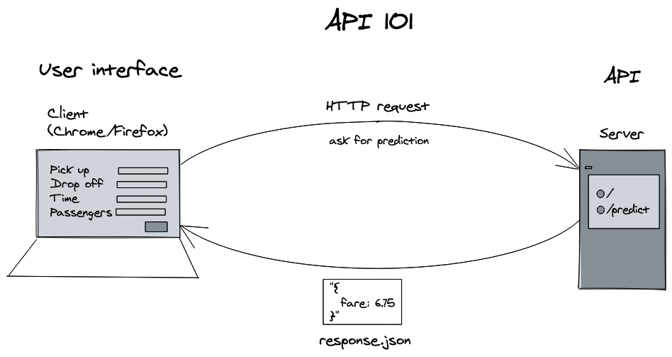
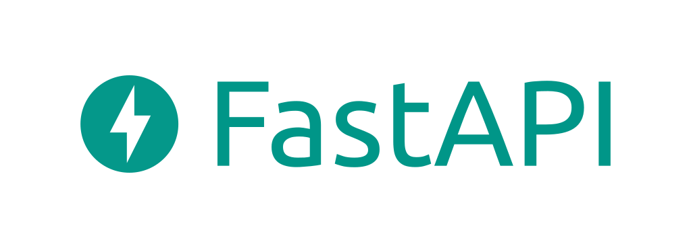
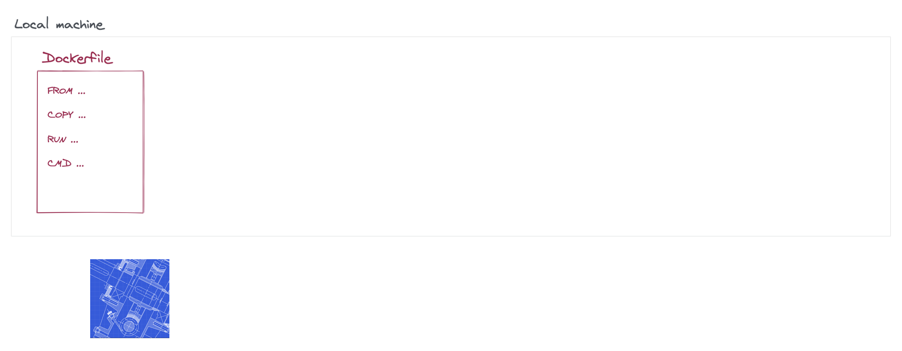
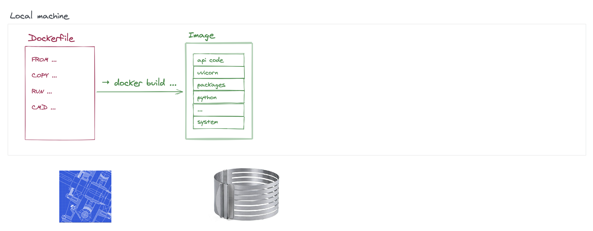
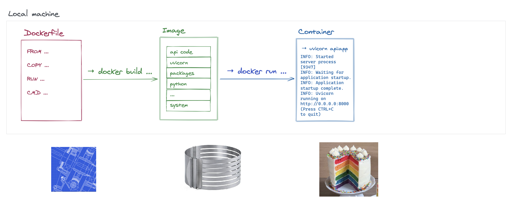

Predict in Production
Exposer un modèle ML au monde via une API REST avec FastAPI, le containeriser avec Docker, et le déployer en production sur Google Cloud Run via Artifact Registry.
gcloud run deploy \
--image $GCP_REGION-docker.pkg.dev/$GCP_PROJECT_ID/$DOCKER_REPO_NAME/$DOCKER_IMAGE_NAME:0.1 \
--region $GCP_REGIONdocker build -t api . # build l'image
docker run -e PORT=8000 -p 8080:8000 api # run le container
## -e PORT=8000 : variable d'env pour Uvicorn
## -p 8080:8000 : mappe port 8080 (host) → 8000 (container)
docker ps # containers actifs
docker stop <ID> # arrêter
docker images # lister les images
docker run -it api sh # shell interactif dans le containerFROM python:3.10.6-buster
COPY api /api
COPY requirements.txt /requirements.txt
RUN pip install --upgrade pip
RUN pip install -r requirements.txt
CMD uvicorn api.simple:app --host 0.0.0.0 --port $PORT| Instruction | Rôle | Exemple |
|---|---|---|
FROM | Image de base | FROM python:3.10.6-buster |
COPY | Copie des fichiers dans l'image | COPY api /api |
RUN | Exécute une commande pendant le build | RUN pip install -r requirements.txt |
CMD | Commande lancée au démarrage du container | CMD uvicorn api:app --host 0.0.0.0 |

## Build
docker build -t api . # construit l'image
## Run en local
docker run -e PORT=8000 -p 8080:8000 api # -p host:container
## → http://localhost:8080
## Gestion
docker ps # liste les containers actifs
docker stop <CONTAINER_ID> # arrête un container
docker images # liste les imagesfrom fastapi import FastAPI
app = FastAPI()
@app.get('/') # endpoint racine
def index():
return {'ok': True}
@app.get('/predict') # endpoint de prédiction
def predict(day_of_week: int, time: str): # query params typés
prediction = compute_prediction(day_of_week, time)
return {'wait': prediction}from fastapi import FastAPI
app = FastAPI()
@app.get('/') # endpoint racine
def index():
return {'ok': True}
@app.get('/predict') # endpoint de prédiction
def predict(day_of_week: int, time: str): # query params typés
# Charger le modèle et prédire
prediction = model.predict(...)
return {'wait': prediction} # réponse JSONpip install fastapi uvicorn
uvicorn app.simple:app --reload # lance le serveur (hot-reload)
## → http://localhost:8000 # API
## → http://localhost:8000/docs # Swagger UI (tests interactifs)FastAPI — Créer une API
FROM python:3.10.6-buster # image de base
COPY app /app # copie le code
COPY requirements.txt /requirements.txt # copie les dépendances
RUN pip install --upgrade pip # installe pip
RUN pip install -r requirements.txt # installe les packages
CMD uvicorn app.simple:app --host 0.0.0.0 --port $PORT # commande de démarrage
## --host 0.0.0.0 : écoute toutes les connexions réseau du container
## --port $PORT : port défini par Cloud Run## Build
docker build -t api . # construit l'image
docker build --platform linux/amd64 -t api . # pour M1/M2 → déploiement GCP
## Run localement
docker run -e PORT=8000 -p 8080:8000 api # -p host:container
## → http://localhost:8080
## Gestion
docker ps # liste les containers actifs
docker stop <CONTAINER_ID> # arrête un containerpip install fastapi uvicorn
uvicorn simple:app --reload # lance le serveur (hot-reload)
## → http://localhost:8000 # API
## → http://localhost:8000/docs # Swagger UI (test interactif)Docker — Containeriser
## Authentification (une seule fois)
gcloud auth configure-docker $GCP_REGION-docker.pkg.dev
## Créer un repository
gcloud artifacts repositories create $DOCKER_REPO_NAME \
--repository-format=docker \
--location=$GCP_REGION
## Build avec tag complet
docker build -t $GCP_REGION-docker.pkg.dev/$GCP_PROJECT_ID/$DOCKER_REPO_NAME/$DOCKER_IMAGE_NAME:0.1 .
## Push
docker push $GCP_REGION-docker.pkg.dev/$GCP_PROJECT_ID/$DOCKER_REPO_NAME/$DOCKER_IMAGE_NAME:0.1FROM python:3.10.6-buster # image de base avec Python
COPY api /api # copie le code de l'API
COPY requirements.txt /requirements.txt # copie les dépendances
RUN pip install --upgrade pip # met à jour pip
RUN pip install -r requirements.txt # installe les dépendances
CMD uvicorn api.simple:app --host 0.0.0.0 --port $PORT # lance le serveurgcloud run deploy \
--image $GCP_REGION-docker.pkg.dev/$GCP_PROJECT_ID/$DOCKER_REPO_NAME/$DOCKER_IMAGE_NAME:0.1 \
--region $GCP_REGION
## → URL publique de l'API déployée## Variables
GCP_PROJECT_ID="my-project"
GCP_REGION="europe-west1"
DOCKER_REPO_NAME="my-repo"
DOCKER_IMAGE_NAME="taxifare-api"
## 1. Configurer l'authentification Docker (une seule fois)
gcloud auth configure-docker $GCP_REGION-docker.pkg.dev
## 2. Créer un repo sur Artifact Registry
gcloud artifacts repositories create $DOCKER_REPO_NAME \
--repository-format=docker --location=$GCP_REGION
## 3. Build l'image pour le cloud (amd64 pour M1/M2)
docker build --platform linux/amd64 \
-t $GCP_REGION-docker.pkg.dev/$GCP_PROJECT_ID/$DOCKER_REPO_NAME/$DOCKER_IMAGE_NAME:0.1 .
## 4. Push vers Artifact Registry
docker push $GCP_REGION-docker.pkg.dev/$GCP_PROJECT_ID/$DOCKER_REPO_NAME/$DOCKER_IMAGE_NAME:0.1
## 5. Déployer sur Cloud Run
gcloud run deploy \
--image $GCP_REGION-docker.pkg.dev/$GCP_PROJECT_ID/$DOCKER_REPO_NAME/$DOCKER_IMAGE_NAME:0.1 \
--region $GCP_REGION⚠️ Récapitulatif — Erreurs clés à éviter
Oublier --host 0.0.0.0 dans la commande Uvicorn du Dockerfile
Par défaut, Uvicorn écoute sur 127.0.0.1 (localhost uniquement) — inaccessible depuis l'extérieur du container.
❌ CMD uvicorn api:app → l'API tourne mais personne ne peut y accéder
✅ CMD uvicorn api:app --host 0.0.0.0 --port $PORT
Ne pas utiliser $PORT pour Cloud Run
Cloud Run assigne dynamiquement un port via la variable d'environnement $PORT — Uvicorn doit écouter dessus.
❌ CMD uvicorn api:app --host 0.0.0.0 --port 8000 → Cloud Run ne trouve pas le serveur
✅ CMD uvicorn api:app --host 0.0.0.0 --port $PORT
Construire une image ARM sur Mac M1/M2 et la déployer sur GCP
Docker sur Mac ARM construit des images linux/arm64 par défaut — GCP utilise linux/amd64.
❌ docker build -t api . sur Mac M1 → crash sur Cloud Run
✅ docker build --platform linux/amd64 -t api .
Oublier que les query params FastAPI sont des strings
Tous les paramètres de query string arrivent comme str — il faut les convertir manuellement.
❌ def predict(passengers): return passengers + 1 → TypeError (str + int)
✅ Typer les paramètres : def predict(passengers: int) ou convertir explicitement
Inclure les données d'entraînement dans l'image Docker
L'image doit être légère — seuls le code, les dépendances et éventuellement le modèle doivent y figurer.
❌ COPY data/ /data/ avec 10 Go de CSV → image énorme, push interminable

1) Web 101 — Comment fonctionne une API

2) FastAPI — Créer l'API de prédiction
2.1 Présentation


FastAPI est un framework Python haute performance pour construire des APIs REST. Il génère automatiquement une documentation Swagger testable.
2.2 Endpoint racine
from fastapi import FastAPI
app = FastAPI()
@app.get('/')
def index():
return {'ok': True}from fastapi import FastAPI
app = FastAPI()
@app.get('/')
def index():
return {'ok': True}2.3 Endpoint de prédiction avec query params
@app.get('/predict')
def predict(day_of_week: int, time: str):
# Le client appelle : /predict?day_of_week=0&time=14:00
prediction = compute_prediction(day_of_week, time)
return {'wait': prediction}@app.get('/predict')
def predict(day_of_week: int, time: str):
prediction = model.predict(day_of_week, time)
return {'wait': prediction}Requête : http://localhost:8000/predict?day_of_week=0&time=14:00
uvicorn app.simple:app --reload # filename:variable
## → http://localhost:8000 # API
## → http://localhost:8000/docs # Swagger (tests interactifs)
## → http://localhost:8000/redoc # ReDoc (documentation)uvicorn simple:app --reload # filename:variable
## → http://localhost:8000 API
## → http://localhost:8000/docs Swagger (test interactif)
## → http://localhost:8000/redoc DocumentationLe /docs Swagger permet de tester chaque endpoint directement dans le navigateur — très utile pour le debugging et pour les développeurs qui intègrent l'API.
3) Docker — Containeriser l'application
3.1 Pourquoi Docker ?
On veut la flexibilité d'une VM (IaaS) sans la complexité de configuration. Un container encapsule le code, l'environnement et l'OS dans un package portable et reproductible.
3.2 Dockerfile → Image → Container



| Concept | Analogie | Rôle |
|---|---|---|
| Dockerfile | Recette du gâteau | Liste les instructions pour construire l'image |
| Image | Moule à gâteau | Template immuable contenant code + env + OS |
| Container | Le gâteau | Instance en cours d'exécution de l'image |
FROM python:3.10.6-buster # 1. Image de base (OS + Python)
COPY app /app # 2. Copier le code dans l'image
COPY requirements.txt /requirements.txt
RUN pip install -r requirements.txt # 3. Installer les dépendances
CMD uvicorn app.simple:app --host 0.0.0.0 --port $PORT # 4. Commande au démarragedocker build -t api . # build l'image (nommée "api")
docker run -e PORT=8000 -p 8080:8000 api # run le container
docker ps # liste les containers actifs
docker stop <ID> # arrête un container
docker run -it api sh # shell interactif dans le container4) Déployer sur Google Cloud
4.1 Artifact Registry — Stocker l'image
## Config (une seule fois)
gcloud auth configure-docker $GCP_REGION-docker.pkg.dev
gcloud artifacts repositories create $DOCKER_REPO_NAME \
--repository-format=docker --location=$GCP_REGION
## Build + Push
docker build --platform linux/amd64 \
-t $GCP_REGION-docker.pkg.dev/$GCP_PROJECT_ID/$DOCKER_REPO_NAME/$DOCKER_IMAGE_NAME:0.1 .
docker push $GCP_REGION-docker.pkg.dev/$GCP_PROJECT_ID/$DOCKER_REPO_NAME/$DOCKER_IMAGE_NAME:0.1Google Artifact Registry stocke les images Docker dans le cloud — Cloud Run les récupère pour les déployer.
## Authentification (une seule fois)
gcloud auth configure-docker $GCP_REGION-docker.pkg.dev
## Créer un repo
gcloud artifacts repositories create $DOCKER_REPO_NAME \
--repository-format=docker --location=$GCP_REGION
## Build pour le cloud (--platform pour Mac M1/M2)
docker build --platform linux/amd64 \
-t $GCP_REGION-docker.pkg.dev/$GCP_PROJECT_ID/$DOCKER_REPO_NAME/$DOCKER_IMAGE_NAME:0.1 .
## Push
docker push $GCP_REGION-docker.pkg.dev/$GCP_PROJECT_ID/$DOCKER_REPO_NAME/$DOCKER_IMAGE_NAME:0.14.2 Cloud Run — Servir l'API
gcloud run deploy \
--image $GCP_REGION-docker.pkg.dev/$GCP_PROJECT_ID/$DOCKER_REPO_NAME/$DOCKER_IMAGE_NAME:0.1 \
--region $GCP_REGION
📚 Bibliographie
- 👉 FastAPI documentation
- 👉 Uvicorn documentation
- 👉 Google Artifact Registry docs
- 👉 Docker Hub — Images de base
- 👉 Google Artifact Registry
- 👉 Google Cloud Run
- 👉 Pydantic — Validation des query params
🚀 Challenges
- Créer une API FastAPI qui expose le modèle TaxiFare via un endpoint
/predict - Containeriser l'API avec Docker et tester en local
- Pousser l'image sur Artifact Registry et déployer sur Cloud Run
🧭 Introduction
Jusqu'ici, tu as entraîné des modèles sur ton ordinateur. C'est bien, mais ça ne sert à rien si personne d'autre ne peut s'en servir. Ce cours t'explique comment rendre un modèle accessible à tout le monde via Internet, sous la forme d'une API web.
L'idée fil rouge est simple : imagine que ton modèle est un cuisinier enfermé dans ta cuisine. Pour que des clients puissent commander ses plats, tu dois d'abord ouvrir un restaurant (une API), puis installer ce restaurant dans un immeuble (Docker), puis donner l'adresse à tout le monde (déploiement sur le cloud).
A retenir
- FastAPI est le framework Python qui te permet de créer une API REST en quelques lignes.
- Docker emballe ton code + ses dépendances dans une boîte portable qu'on appelle un container.
- Google Artifact Registry est un entrepôt dans le cloud qui stocke tes images Docker.
- Google Cloud Run lit l'image depuis l'entrepôt et la fait tourner en production, accessible via une URL publique.
- Le chemin complet est toujours : Code Python → API FastAPI → Image Docker → Push vers le cloud → Déploiement Cloud Run.
Mini-plan
- Web 101 — comment fonctionne une requête HTTP
- FastAPI — créer une API de prédiction
- Docker — containeriser l'application
- Google Cloud — stocker et déployer
1) Web 101 — Comment fonctionne une API
Le principe de la requête / réponse
Quand tu tapes une URL dans ton navigateur, tu envoies une requête HTTP à un serveur. Le serveur reçoit la demande, fait un traitement, et te renvoie une réponse (souvent en JSON pour les APIs).
Client (navigateur, Python…) ──→ Requête HTTP GET /predict?passengers=3
←── Réponse JSON {"wait": 12.4}
Serveur (ton API FastAPI)Une API REST est juste un serveur qui répond à des requêtes HTTP avec des données structurées (JSON). Pas de magie — c'est le même mécanisme que quand tu charges une page web.
Les méthodes HTTP les plus courantes
| Méthode | Usage typique |
|---|---|
GET | Lire des données (ex : demander une prédiction) |
POST | Envoyer des données (ex : soumettre un formulaire) |
Pour ce cours, on utilisera presque exclusivement GET : le client envoie ses paramètres dans l'URL, le serveur répond avec la prédiction.
2) FastAPI — Créer l'API de prédiction
2.1 Présentation de FastAPI
FastAPI est un framework Python moderne et très rapide pour construire des APIs. Ses avantages pour un débutant :
- Syntaxe simple, proche de Flask si tu connais.
- Il génère automatiquement une documentation interactive (Swagger UI) — tu peux tester tes endpoints directement dans le navigateur.
- Il valide les types des paramètres d'entrée automatiquement.
Installation :
pip install fastapi uvicornUvicorn est le serveur web qui fait "tourner" ton application FastAPI. FastAPI définit l'application, Uvicorn la sert sur le réseau. C'est la même distinction qu'entre une recette et un four.
2.2 Un premier endpoint racine
Crée un fichier simple.py :
from fastapi import FastAPI # on importe FastAPI
app = FastAPI() # on crée l'application
@app.get('/') # décorateur : cette fonction répond aux GET sur "/"
def index():
return {'ok': True} # FastAPI convertit le dict en JSON automatiquementLance le serveur :
uvicorn simple:app --reload # "simple" = nom du fichier, "app" = nom de la variable
# --reload : redémarre automatiquement à chaque modification du code (pratique en dev)Tu peux maintenant ouvrir ton navigateur sur :
http://localhost:8000→ répond{"ok": true}http://localhost:8000/docs→ interface Swagger pour tester visuellement
Le /docs Swagger est ton meilleur ami en développement. Il liste tous tes endpoints, te permet de les tester sans écrire une ligne de code supplémentaire, et documente les paramètres attendus.
2.3 L'endpoint de prédiction avec query params
Les query params sont les paramètres passés dans l'URL après le ?. Exemple :
/predict?day_of_week=0&time=14:00
^^^^^^^^^^^^^ ^^^^^^^^^^
param 1 param 2@app.get('/predict') # endpoint accessible via GET /predict
def predict(day_of_week: int, time: str): # FastAPI lit ces paramètres depuis l'URL
# day_of_week et time sont remplis automatiquement depuis la query string
prediction = compute_prediction(day_of_week, time) # appel à ton modèle
return {'wait': prediction} # réponse JSON renvoyée au clientExemple d'appel complet depuis un navigateur ou Python :
http://localhost:8000/predict?day_of_week=0&time=14:00Attention aux types ! Tous les paramètres d'URL sont des strings par défaut. Si tu déclares day_of_week: int, FastAPI convertit automatiquement. Mais si tu oublies le typage, tu auras des erreurs en faisant des calculs : "0" + 1 lève une TypeError en Python.
Récapitulatif de ce qu'on a vu avec FastAPI :
| Élément | Rôle |
|---|---|
app = FastAPI() | Crée l'application |
@app.get('/route') | Définit un endpoint GET |
| Paramètres typés | Convertis et validés automatiquement |
/docs | Documentation Swagger auto-générée |
3) Docker — Containeriser l'application
3.1 Pourquoi Docker ?
Problème classique : ton code tourne parfaitement sur ta machine, mais plante sur le serveur de production parce que les versions de Python ou des librairies sont différentes.
Docker résout ce problème en créant une boîte autonome — le container — qui contient ton code + toutes ses dépendances + l'OS minimal pour le faire tourner. Cette boîte est identique partout où elle s'exécute.
Analogie cuisine : Docker, c'est comme livrer à un restaurant non pas juste la recette, mais toute la cuisine équipée avec les bons ustensiles et les bons ingrédients. Le résultat sera identique peu importe où la cuisine atterrit.
3.2 Les trois concepts clés : Dockerfile, Image, Container
| Concept | Analogie | Rôle |
|---|---|---|
| Dockerfile | Recette de cuisine | Fichier texte qui décrit comment construire l'image |
| Image | Moule à gâteau | Template immuable et portable (code + env + OS) |
| Container | Le gâteau fini | Instance en cours d'exécution de l'image |
Le flux est toujours dans ce sens :
Dockerfile → docker build → Image → docker run → Container (en cours d'exécution)3.3 Écrire un Dockerfile
Le Dockerfile est un fichier texte à la racine de ton projet, sans extension. Voici le Dockerfile type pour une API FastAPI :
FROM python:3.10.6-buster # 1. Image de base : OS Debian + Python 3.10
COPY api /api # 2. Copie ton dossier "api" dans l'image
COPY requirements.txt /requirements.txt # 2. Copie les dépendances
RUN pip install --upgrade pip # 3. Met à jour pip (bonne pratique)
RUN pip install -r requirements.txt # 3. Installe toutes les dépendances
CMD uvicorn api.simple:app --host 0.0.0.0 --port $PORT # 4. Commande lancée au démarrage du container
# --host 0.0.0.0 : écoute toutes les connexions (pas seulement localhost)
# --port $PORT : port fourni par l'environnement (Cloud Run impose le sien)Détail des instructions Dockerfile :
| Instruction | Rôle | Exemple |
|---|---|---|
FROM | Image de base (OS + runtime) | FROM python:3.10.6-buster |
COPY | Copie des fichiers locaux dans l'image | COPY api /api |
RUN | Exécute une commande lors du build | RUN pip install -r requirements.txt |
CMD | Commande lancée quand le container démarre | CMD uvicorn api.simple:app ... |
Piège classique n°1 : oublier --host 0.0.0.0. Par défaut, Uvicorn n'écoute que sur 127.0.0.1 (localhost), ce qui est inaccessible depuis l'extérieur du container. Sans ce flag, ton API tourne mais aucun client ne peut la joindre.
Piège classique n°2 : utiliser --port 8000 en dur au lieu de --port $PORT. Cloud Run assigne dynamiquement un numéro de port via la variable d'environnement $PORT. Si tu codes le port en dur, Cloud Run ne trouvera pas ton serveur.
3.4 Construire et lancer l'image en local
# Construire l'image Docker (le "." désigne le dossier courant où se trouve le Dockerfile)
docker build -t api .
# -t api : donne le nom "api" à l'image
# Sur Mac M1/M2 : il FAUT préciser la plateforme pour la compatibilité avec GCP
docker build --platform linux/amd64 -t api .
# Lancer un container depuis l'image
docker run -e PORT=8000 -p 8080:8000 api
# -e PORT=8000 : crée la variable d'environnement $PORT à l'intérieur du container
# -p 8080:8000 : connecte le port 8080 de ta machine au port 8000 du container
# → L'API est accessible sur http://localhost:8080Commandes utiles pour gérer tes containers :
docker ps # liste les containers en cours d'exécution
docker stop <CONTAINER_ID> # arrête proprement un container
docker images # liste toutes les images téléchargées ou buildées
docker run -it api sh # ouvre un shell interactif dans le container (pour débugger)Pourquoi le port 8080 et pas 8000 directement ? La commande -p 8080:8000 crée un pont : tu accèdes à localhost:8080 sur ta machine, et Docker redirige vers le port 8000 à l'intérieur du container. Tu peux choisir n'importe quel port côté machine.
Piège classique n°3 : construire une image ARM sur Mac M1/M2 sans --platform linux/amd64. GCP tourne sur des serveurs Intel/AMD. Si tu oublies ce flag, ton image plantée en production avec une erreur obscure.
4) Déployer sur Google Cloud
4.1 Vue d'ensemble : le pipeline de déploiement
Dockerfile → Image Docker → Artifact Registry → Cloud Run → URL publique
(en local) (entrepôt GCP) (serveur)Deux services Google entrent en jeu :
- Artifact Registry : entrepôt cloud pour stocker tes images Docker (comme un Docker Hub privé dans ton projet GCP).
- Cloud Run : service serverless qui prend une image Docker et la rend accessible via une URL publique HTTPS. Tu ne gères aucun serveur.
4.2 Artifact Registry — Stocker l'image dans le cloud
Avant de déployer, ton image doit être uploadée ("pushée") vers Google Artifact Registry. Voici le workflow complet :
# Variables d'environnement à définir une fois dans ton terminal (ou .env)
GCP_PROJECT_ID="my-project" # ton ID de projet GCP
GCP_REGION="europe-west1" # la région GCP choisie
DOCKER_REPO_NAME="my-repo" # nom du repo Artifact Registry
DOCKER_IMAGE_NAME="taxifare-api" # nom de ton image
# Étape 1 : Autoriser Docker à pousser vers GCP (une seule fois par machine)
gcloud auth configure-docker $GCP_REGION-docker.pkg.dev
# Étape 2 : Créer le repo dans Artifact Registry (une seule fois par projet)
gcloud artifacts repositories create $DOCKER_REPO_NAME \
--repository-format=docker \
--location=$GCP_REGION
# Étape 3 : Builder l'image avec son tag complet GCP (le nom comprend l'adresse du repo)
docker build --platform linux/amd64 \
-t $GCP_REGION-docker.pkg.dev/$GCP_PROJECT_ID/$DOCKER_REPO_NAME/$DOCKER_IMAGE_NAME:0.1 .
# :0.1 → numéro de version de l'image (tag)
# Étape 4 : Pousser l'image vers Artifact Registry
docker push $GCP_REGION-docker.pkg.dev/$GCP_PROJECT_ID/$DOCKER_REPO_NAME/$DOCKER_IMAGE_NAME:0.1Le nom complet de l'image suit ce format : REGION-docker.pkg.dev/PROJECT/REPO/IMAGE:TAG. C'est long, mais ça encode exactement où l'image est stockée dans l'infrastructure Google.
4.3 Cloud Run — Déployer et servir l'API
Une seule commande suffit pour déployer :
gcloud run deploy \
--image $GCP_REGION-docker.pkg.dev/$GCP_PROJECT_ID/$DOCKER_REPO_NAME/$DOCKER_IMAGE_NAME:0.1 \
--region $GCP_REGION
# → Cloud Run récupère l'image, la lance et te donne une URL HTTPS publiqueCloud Run gère automatiquement :
- Le démarrage et l'arrêt des containers selon la charge.
- Les certificats HTTPS.
- La mise à l'échelle (scaling) si beaucoup de requêtes arrivent.
Cloud Run est dit serverless : tu ne paies que quand ton API reçoit des requêtes. Si personne ne l'appelle, aucun coût. C'est idéal pour des projets pédagogiques ou des APIs à trafic variable.
4.4 Récapitulatif complet du pipeline en une fois
# --- Variables ---
GCP_PROJECT_ID="my-project"
GCP_REGION="europe-west1"
DOCKER_REPO_NAME="my-repo"
DOCKER_IMAGE_NAME="taxifare-api"
# --- 1. Auth Docker vers GCP (une seule fois) ---
gcloud auth configure-docker $GCP_REGION-docker.pkg.dev
# --- 2. Créer le repo Artifact Registry (une seule fois) ---
gcloud artifacts repositories create $DOCKER_REPO_NAME \
--repository-format=docker --location=$GCP_REGION
# --- 3. Builder pour linux/amd64 (obligatoire sur Mac M1/M2) ---
docker build --platform linux/amd64 \
-t $GCP_REGION-docker.pkg.dev/$GCP_PROJECT_ID/$DOCKER_REPO_NAME/$DOCKER_IMAGE_NAME:0.1 .
# --- 4. Pousser vers Artifact Registry ---
docker push $GCP_REGION-docker.pkg.dev/$GCP_PROJECT_ID/$DOCKER_REPO_NAME/$DOCKER_IMAGE_NAME:0.1
# --- 5. Déployer sur Cloud Run ---
gcloud run deploy \
--image $GCP_REGION-docker.pkg.dev/$GCP_PROJECT_ID/$DOCKER_REPO_NAME/$DOCKER_IMAGE_NAME:0.1 \
--region $GCP_REGION5) Les erreurs classiques à ne pas faire
Cette section résume les cinq pièges les plus fréquents chez les débutants.
Erreur 1 — Oublier --host 0.0.0.0 dans le Dockerfile
# MAUVAIS : Uvicorn écoute seulement localhost, inaccessible depuis l'extérieur du container
CMD uvicorn api.simple:app
# BON : écoute sur toutes les interfaces réseau
CMD uvicorn api.simple:app --host 0.0.0.0 --port $PORTErreur 2 — Coder le port en dur au lieu d'utiliser $PORT
# MAUVAIS : Cloud Run impose son propre port via $PORT, il ne trouvera pas ton serveur
CMD uvicorn api.simple:app --host 0.0.0.0 --port 8000
# BON : utilise la variable d'environnement fournie par Cloud Run
CMD uvicorn api.simple:app --host 0.0.0.0 --port $PORTErreur 3 — Builder sans --platform sur Mac M1/M2
# MAUVAIS : produit une image ARM incompatible avec les serveurs GCP (Intel/AMD)
docker build -t api .
# BON : force l'architecture amd64 pour la compatibilité GCP
docker build --platform linux/amd64 -t api .Erreur 4 — Oublier de typer les query params
# MAUVAIS : passengers est une string, "3" + 1 lève une TypeError
@app.get('/predict')
def predict(passengers):
return passengers + 1
# BON : FastAPI convertit automatiquement grâce au typage
@app.get('/predict')
def predict(passengers: int):
return passengers + 1Erreur 5 — Copier les données d'entraînement dans l'image
# MAUVAIS : 10 Go de CSV dans l'image → push de 10 minutes, image inutilisable
COPY data/ /data/
# BON : l'image ne contient que le code, les dépendances et éventuellement le modèle sérialisé
COPY api /api
COPY requirements.txt /requirements.txtUne image Docker doit rester légère. Elle ne doit contenir que ce qui est strictement nécessaire à l'exécution : le code, les dépendances Python, et éventuellement le fichier .pkl du modèle. Jamais les données brutes d'entraînement.
🎯 Questions de vérification
1. Quelle est la différence entre une image Docker et un container Docker ?
L'image est le template immuable (le moule) construit à partir du Dockerfile. Le container est une instance en cours d'exécution de cette image (le gâteau). On peut lancer plusieurs containers depuis la même image.
2. Pourquoi doit-on écrire --host 0.0.0.0 dans la commande Uvicorn du Dockerfile, alors qu'en développement local on ne le met pas ?
En local, Uvicorn écoute sur 127.0.0.1 (ta machine uniquement), ce qui suffit. Dans un container Docker, le réseau est isolé : sans 0.0.0.0, Uvicorn écoute à l'intérieur du container mais aucune requête externe (venant de ta machine ou d'Internet) ne peut l'atteindre.
3. Quel est le rôle de -p 8080:8000 dans la commande docker run ?
Ce flag crée un "pont" entre le port 8080 de ta machine (hôte) et le port 8000 à l'intérieur du container. Tu accèdes à localhost:8080, Docker redirige vers 8000 dans le container. Sans ce pont, le container tourne mais est injoignable depuis ta machine.
4. Pourquoi Cloud Run est-il considéré comme "serverless" et quel est son avantage concret ?
Serverless signifie que tu ne gères aucun serveur. Cloud Run démarre des containers à la demande quand des requêtes arrivent et les éteint quand il n'y a pas de trafic. L'avantage concret : tu ne paies que pour le temps de calcul réellement utilisé, et tu n'as rien à configurer en termes d'infrastructure.
📌 TL;DR
- FastAPI permet de créer une API REST en Python en quelques lignes : tu définis des fonctions Python décorées avec
@app.get('/route')et elles deviennent des endpoints accessibles via HTTP. - Les query params sont les paramètres passés dans l'URL (
/predict?x=1&y=2) ; FastAPI les injecte automatiquement dans la fonction et les convertit si tu les types. - Docker emballe ton application (code + dépendances + OS) dans une image portable. Un container est une instance en cours d'exécution de cette image.
- Le Dockerfile décrit la recette de construction de l'image avec quatre instructions clés :
FROM,COPY,RUN,CMD. - Sur Mac M1/M2, toujours builder avec
--platform linux/amd64pour la compatibilité avec GCP. - Le pipeline de déploiement :
docker build→docker pushvers Artifact Registry →gcloud run deploysur Cloud Run. - Cloud Run prend ton image, la sert sur Internet via HTTPS, et scale automatiquement selon le trafic.
- Les deux erreurs Dockerfile à ne jamais faire : oublier
--host 0.0.0.0(API inaccessible) et coder le port en dur au lieu de$PORT(Cloud Run ne trouve pas le serveur).
A. Concepts du cours
API REST avec FastAPI
FastAPI (2018) est devenu le framework Python standard pour servir des modèles ML en API. Plus rapide et plus moderne que Flask, avec validation Pydantic native et docs OpenAPI auto-générées.
from fastapi import FastAPI
from pydantic import BaseModel
import joblib
import numpy as np
# App FastAPI — le "title" apparaît dans /docs (Swagger UI auto)
app = FastAPI(title="Churn Predictor")
# Chargé UNE SEULE FOIS au démarrage (pas à chaque requête !)
model = joblib.load("models/churn_v3.pkl")
# --- Schéma d'entrée Pydantic : valide automatiquement le JSON reçu ---
class CustomerInput(BaseModel):
age: int # rejette "trente" ou 25.5 automatiquement
tenure: int
monthly_charges: float
total_charges: float
# On pourrait ajouter des contraintes : age: int = Field(ge=0, le=120)
# --- Schéma de sortie : documente le contrat de l'API ---
class PredictionOutput(BaseModel):
churn_probability: float
will_churn: bool
# POST /predict — response_model active la validation de sortie + doc OpenAPI
@app.post("/predict", response_model=PredictionOutput)
def predict(customer: CustomerInput):
# Conversion dict Pydantic → array numpy (ordre des features crucial !)
features = np.array([[
customer.age, customer.tenure,
customer.monthly_charges, customer.total_charges,
]])
# predict_proba renvoie [[p_class0, p_class1]], on prend p_class1
proba = model.predict_proba(features)[0, 1]
return PredictionOutput(
churn_probability=float(proba), # cast float pour sérialisation JSON
will_churn=proba > 0.5,
)
# Endpoint de santé — utilisé par les load balancers / Kubernetes
@app.get("/health")
def health():
return {"status": "ok", "model_version": "v3"}Lancement :
# main = fichier main.py, app = instance FastAPI définie dedans
# --workers 4 : 4 process parallèles (util pour gérer plusieurs requêtes en même temps)
uvicorn main:app --host 0.0.0.0 --port 8000 --workers 4Ce que vous gagnez gratuitement :
- Validation : un utilisateur qui envoie
age: "trente"reçoit immédiatement une erreur 422 explicite - Documentation :
http://localhost:8000/docsaffiche une UI interactive Swagger - Type safety : votre IDE auto-complète les attributs de
customer - Performance : FastAPI est 2-3x plus rapide que Flask grâce à Starlette et async
Analogie : Flask, c'est une voiture des années 2010 — elle marche, elle est fiable, mais elle n'a ni GPS, ni caméra de recul, ni régulateur. FastAPI, c'est une voiture moderne — tout est intégré, vous gagnez en productivité et en sécurité sans effort.
Sérialisation et chargement de modèles
import joblib
# Sauvegarde
joblib.dump(model, "model.pkl")
# Chargement
model = joblib.load("model.pkl")joblib est plus efficace que pickle pour les gros tableaux NumPy. Trois précautions essentielles :
- Versions : le pickle est sensible aux versions de Python et des libs. Sauvegardez
requirements.txtavec le modèle. Chargez avec exactement le même environnement.
- Sécurité : un pickle peut exécuter du code arbitraire à
load. Jamais charger un pickle depuis une source non fiable.
- Format alternatif :
| Format | Avantage | Inconvénient |
|---|---|---|
pickle/joblib | Standard Python | Sensible aux versions |
| ONNX | Portable (Python → C++ → mobile) | Mise en place plus complexe |
| TensorFlow SavedModel | Standard TF | Lié à TF |
| TorchScript | Pour PyTorch | Lié à PyTorch |
| Hugging Face safetensors | Sûr, rapide, multi-framework | Pour transformers principalement |
# Exemple ONNX
from skl2onnx import convert_sklearn
from skl2onnx.common.data_types import FloatTensorType
initial_type = [("input", FloatTensorType([None, n_features]))]
onnx_model = convert_sklearn(model, initial_types=initial_type)
with open("model.onnx", "wb") as f:
f.write(onnx_model.SerializeToString())ONNX permet ensuite de servir le modèle en C++, JavaScript (ONNX.js), mobile (Core ML, TensorFlow Lite). Découplage runtime / training.
Containerisation et déploiement
(Cf. ML Ops pour les détails Docker.)
Pour servir une API en production, vous packagez en image Docker et déployez sur :
| Plateforme | Type | Quand l'utiliser |
|---|---|---|
| AWS Lambda / GCP Cloud Functions | Serverless | Faible volume, auto-scale, pay-per-use |
| AWS ECS / Cloud Run / Azure Container Instances | Container managé | Volume modéré, simple à mettre en place |
| Kubernetes (EKS, GKE, AKS) | Orchestration | Volume élevé, multi-services, complexe |
| AWS SageMaker / Vertex AI | ML managé | Pour ne pas gérer l'infra |
# Cloud Run (GCP) — la solution la plus simple
gcloud run deploy churn-api \
--source . \
--region us-central1 \
--allow-unauthenticatedCloud Run construit l'image Docker, la déploie, vous donne une URL HTTPS publique en 2 minutes. Auto-scale de 0 à N instances selon le trafic. Coût : ~$0 si pas de trafic.
Recommandation 2025 : pour démarrer un déploiement ML, commencez par Cloud Run ou Modal (Modal est encore plus simple, conçu pour les workloads ML). Évitez Kubernetes tant que vous n'en avez pas besoin — c'est de la complexité opérationnelle qui ne se justifie qu'à grande échelle.
Batch vs real-time
Deux modes radicalement différents de servir un modèle.
Real-time (online) : une requête arrive, vous renvoyez une prédiction en quelques millisecondes/secondes. C'est ce qui se passe quand vous utilisez ChatGPT, Netflix, ou un site avec recommandations.
Batch (offline) : périodiquement (toutes les heures, tous les jours), vous traitez un grand nombre d'inputs en bloc et écrivez les résultats dans une base de données. C'est ce qui se passe pour les emails marketing, les scoring de crédit nightly, les rapports analytiques.
| Real-time | Batch | |
|---|---|---|
| Latence | Critique (<1s) | Pas critique |
| Throughput | Modéré | Très élevé |
| Architecture | API REST + container | Job Spark/Dask + scheduler |
| Coût | Plus cher (instance toujours up) | Moins cher (instance ponctuelle) |
| Complexité | Plus complexe (monitoring, scaling) | Plus simple |
# Batch typique avec Spark
from pyspark.sql import SparkSession
spark = SparkSession.builder.appName("daily_scoring").getOrCreate()
users = spark.read.parquet("s3://data/users.parquet")
features = users.transform(extract_features)
predictions = features.withColumn("churn_score", predict_udf(struct(*features.columns)))
predictions.write.parquet("s3://output/scores/2024-04-08.parquet")Choix selon le besoin : si l'utilisateur a besoin d'une prédiction "maintenant" (chat, recommendation in-page), c'est real-time. Si le résultat peut être pré-calculé pendant la nuit, c'est batch. Beaucoup de systèmes utilisent les deux : batch pour précalculer, real-time pour servir les résultats déjà calculés. C'est moins cher qu'un real-time pur.
B. Compléments avancés
Latence et throughput
Deux métriques distinctes en production :
- Latence : temps pour traiter UNE requête (de l'arrivée à la réponse)
- Throughput : nombre de requêtes par seconde que le système peut absorber
Souvent en tension : optimiser la latence (1 requête à la fois) limite le throughput. Optimiser le throughput (batching) augmente la latence.
Optimisations courantes :
- Batching dynamique : agréger plusieurs requêtes proches et les passer en un seul forward pass au modèle (très efficace pour GPU).
- Caching : pour des prédictions répétitives, mémoriser les résultats. Redis ou Memcached, ou même un dict LRU en mémoire.
from functools import lru_cache
@lru_cache(maxsize=10000)
def cached_predict(features_tuple):
return model.predict([list(features_tuple)])[0]- Quantization : réduire la précision des poids (FP32 → INT8) pour accélérer l'inférence 2-4x sur CPU.
- Distillation : entraîner un modèle plus petit qui imite un modèle plus gros. DistilBERT vs BERT.
- Model serving optimisé :
TensorRT(NVIDIA),vLLM(pour LLMs),Triton Inference Server(NVIDIA).
# Mesure de latence
import time
start = time.perf_counter()
pred = model.predict(X)
latency_ms = (time.perf_counter() - start) * 1000
print(f"Latency: {latency_ms:.2f} ms")Bonne pratique : monitorer non seulement la moyenne mais aussi les percentiles (p50, p95, p99) de latence. Une moyenne à 50ms peut cacher des p99 à 3000ms — 1% des utilisateurs ont une expérience catastrophique. Les SLA professionnels sont définis sur p95 ou p99, pas sur la moyenne.
Canary deployment et A/B testing
Quand vous déployez une nouvelle version d'un modèle, vous ne voulez pas remplacer 100% du trafic d'un coup. Si la nouvelle version a un bug, vous cassez tout.
Canary deployment : router 1-5% du trafic vers la nouvelle version, monitorer les métriques techniques (latence, erreurs), augmenter progressivement si tout va bien.
A/B testing : router 50% du trafic vers v1, 50% vers v2, comparer les métriques business (conversion, revenu, satisfaction). C'est l'expérimentation contrôlée.
# Exemple Kubernetes avec Istio (service mesh)
apiVersion: networking.istio.io/v1
kind: VirtualService
spec:
http:
- route:
- destination:
host: churn-api
subset: v3
weight: 90
- destination:
host: churn-api
subset: v4
weight: 10Sans Kubernetes, vous pouvez faire du canary plus simplement : déployer deux versions sur Cloud Run, un load balancer qui répartit selon un pourcentage.
Monitoring de production
Quatre dimensions à monitorer :
1. Métriques techniques : latence, throughput, taux d'erreurs HTTP, CPU/RAM, GPU usage.
# Avec Prometheus + Grafana
from prometheus_client import Counter, Histogram
predictions_total = Counter("predictions_total", "Total predictions")
prediction_latency = Histogram("prediction_latency_seconds", "Latency")
@app.post("/predict")
@prediction_latency.time()
def predict(input: Input):
predictions_total.inc()
return model.predict(input)2. Métriques de modèle : distribution des prédictions, confiance moyenne, ratio classes prédites.
3. Drift : comparer la distribution des inputs récents à celle du training set (PSI, KS test).
4. Métriques business : conversion, revenue, NPS — couplées au modèle pour mesurer l'impact réel.
Outils :
- Prometheus + Grafana : standard open source pour le monitoring
- Datadog, New Relic : SaaS commerciaux
- Sentry : capture d'erreurs Python
- Evidently AI, WhyLabs, Arize, Fiddler : monitoring spécialisé ML
Bonne pratique : configurer des alertes sur les métriques critiques. Latence p95 > 500ms ? Slack notification. Erreurs > 1% ? PagerDuty. Drift PSI > 0.2 ? Email à l'équipe ML. Sans alertes, vous découvrez les problèmes par les plaintes utilisateur — trop tard.
C. Questions de compréhension
Q1 : Pourquoi sérialiser un modèle avec joblib ou pickle est-il dangereux pour le déploiement, et quelles sont les alternatives ?
💡 Voir l'indice
versions et sécurité.
✅ Voir la réponse
Trois dangers majeurs. (1) Versions des libs : le pickle dépend de la version de scikit-learn (et numpy, scipy, etc.) au moment de la sauvegarde. Si vous chargez avec une version différente, ça peut crasher silencieusement ou produire des prédictions incorrectes. Mitigation : figer les versions dans requirements.txt et utiliser exactement la même image Docker pour entraîner et servir. (2) Code execution arbitraire : pickle.load peut exécuter du code arbitraire pendant la désérialisation. Si quelqu'un upload un pickle malicieux à votre serveur, il peut prendre le contrôle. Mitigation : ne jamais charger de pickle d'une source non fiable, signer cryptographiquement vos artefacts. (3) Pas portable : un pickle est spécifique à Python. Impossible de servir le modèle en C++, JavaScript, ou mobile sans réimplémentation. Alternatives : (a) ONNX — format portable, multi-framework, multi-langage. (b) TensorFlow SavedModel ou TorchScript — formats natifs, plus portables que pickle. (c) safetensors — format Hugging Face, sûr (pas d'exécution de code) et rapide. (d) Re-entraînement déclaratif : sauvegarder juste les hyperparamètres et données, ré-entraîner à la volée. Pour 95% des projets data science, joblib + Docker bien versionné est OK. Pour des projets critiques ou multi-plateformes, ONNX est la voie. Question d'entretien MLOps : "Comment déployez-vous un modèle ?" — un candidat qui mentionne ONNX et la sécurité du pickle a de l'expérience.
Q2 : Vous avez un modèle qui prend 200 ms à prédire en local. Votre API en production a une latence p99 de 3 secondes. Quelles peuvent être les causes ?
💡 Voir l'indice
layers entre l'utilisateur et le modèle.
✅ Voir la réponse
Cinq causes possibles, à investiguer dans cet ordre. (1) Cold start : si vous utilisez Cloud Run / Lambda en serverless, la première requête après une période d'inactivité doit charger le container et le modèle (~1-3s). Solution : min_instances=1 pour garder une instance toujours warm, ou utiliser un service avec instances dédiées. (2) Sérialisation/deserialization : si vous transformez l'input en JSON puis en tenseur à chaque requête, ça prend du temps. Optimisez avec Pydantic + des types simples. (3) Concurrence et GIL : si plusieurs requêtes arrivent en même temps et que votre serveur tourne en single thread, elles s'attendent. Solution : uvicorn --workers 4 ou plus. (4) Network : la requête doit traverser plusieurs hops (load balancer, ingress, service, container). Chaque hop ajoute 5-50ms. (5) Chargement de features depuis une DB : si votre prédiction nécessite de récupérer des features depuis Postgres ou Redis, la requête DB peut dominer. Cachez ou pré-calculez. Diagnostic : ajouter du logging temporel à chaque étape : log.info(f"DB query: {t1-t0:.3f}s, model: {t2-t1:.3f}s, total: {t2-t0:.3f}s"). Vous verrez immédiatement où le temps est passé. Question d'entretien production ML : "Comment debugger une latence en production ?" — la réponse exhaustive parle de monitoring distribué et d'investigation par étapes.
Q3 : Vous voulez déployer une nouvelle version d'un modèle en production sans risquer de casser le service pour tous les utilisateurs. Quelle stratégie ?
💡 Voir l'indice
canary.
✅ Voir la réponse
Canary deployment : déployer la nouvelle version à côté de l'ancienne, router 1-5% du trafic vers la nouvelle, monitorer les métriques pendant quelques heures, augmenter progressivement (10%, 25%, 50%, 100%). Si à n'importe quelle étape les métriques (latence, erreurs, satisfaction client) se dégradent, rollback immédiat vers l'ancienne version. Étapes pratiques : (1) Déployer la v2 avec un nouveau tag (api:v2) sans toucher à api:v1. (2) Configurer le load balancer pour router 5% vers v2. (3) Monitorer pendant 1-2h les métriques techniques (latence p95, taux d'erreurs HTTP) et business (conversion, accuracy si labels disponibles). (4) Si OK, passer à 25%, 50%, 100%. (5) Si KO, router 0% vers v2 — rollback instantané. Outils : Kubernetes + Istio (le standard), AWS App Mesh, Cloud Run avec traffic splitting (gcloud run services update-traffic --to-revisions=v2=10). Pour aller plus loin — A/B testing : au lieu d'un canary, on garde 50/50 plus longtemps pour collecter assez de data et conclure statistiquement laquelle est meilleure. Mais c'est plus lent à itérer. Règle d'or : aucune mise en prod sans rollback disponible et plan de canary. Question d'entretien production ML : "Comment déployez-vous une nouvelle version sans casser ?" — la réponse exhaustive parle de canary, monitoring, et rollback automatique.
Ressources additionnelles
- FastAPI documentation — la référence
- Designing Machine Learning Systems (Chip Huyen) — chapitres 7-8 sur le déploiement
- Building Machine Learning Powered Applications (Emmanuel Ameisen)
- Modal documentation — déploiement ML simplifié
- Cloud Run documentation
- Site Reliability Engineering (Google, gratuit) — les principes de prod modernes
- Awesome MLOps — outils et ressources